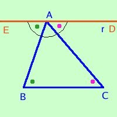
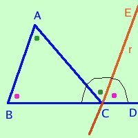

In ogni triangolo la somma degli angoli interni e' congruente ad un angolo
piatto
Adeso che abbiamo fatto tutta questa fatica e' ora che ci facciamo ripagare in facilita' di dimostrazioni: il teorema che segue, ed e' un teorema molto importante, e' ora molto facile da dimostrare
in ogni triangolo
la somma degli angoli interni e' congruente ad un angolo piatto
Te lo dimostro in due modi diversi: tu scegli quello che ti ha spiegato il tuo Prof.
- Primo modo:
Ipotesi
ABC triangolo |
|
Tesi
angoli ABC+ACB+BAC=angolo piatto |

Considero la retta r passante per A e parallela a BC.
l'angolo EAD e' un angolo piatto formato dagli angoli
EAB BAC CAD
EAB + BAC + CAD = Angolo piatto
ma l'angolo EAB = CBA perche' alterni interni rispetto alle parallele r e BC tagliate dalla tasversale AB
l'angolo DAC = BCA perche' alterni interni rispetto alle parallele r e BC tagliate dalla tasversale AC
Di conseguenza
CBA + BAC + BCA = Angolo piatto
come volevamo
- Secondo modo:
Ipotesi
ABC triangolo |
|
Tesi
angoli ABC + ACB + BAC = angolo piatto |

Considero la retta r passante per C e parallela ad AB.
l'angolo BCD e' un angolo piatto formato dagli angoli
BCA ACE ECD
BCA + ACE + ECD = Angolo piatto
ma l'angolo BAC = ACE perche' alterni interni rispetto alle parallele r e AB tagliate dalla tasversale AC
l'angolo ABC = ECD perche' corrispondenti rispetto alle parallele r e AB tagliate dalla tasversale BC
Di conseguenza
BCA + CAB + ABC = Angolo piatto
come volevamo
Da notare che abbiamo usato gli angoli corrispondenti: uno degli angoli corrispondenti e' l'opposto al vertice dell'angolo alterno interno come vedi in figura
Una conseguenza di questo teorema e'
ogni angolo esterno e' congruente alla somma degli angoli interni non adiacenti
|